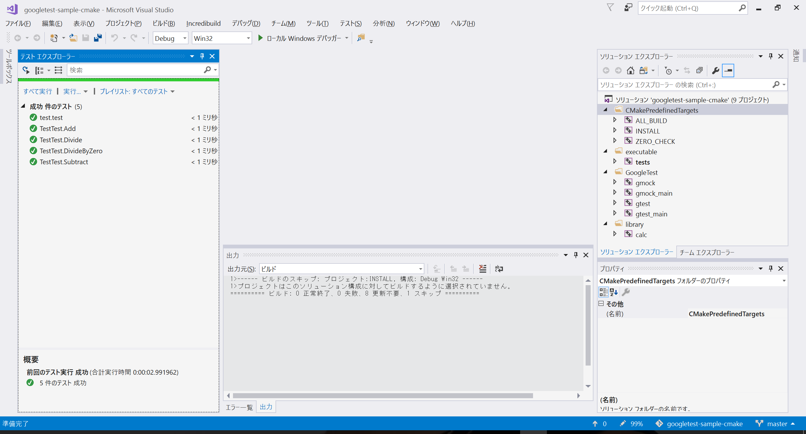

$Date: 2018-07-07 06:49:13 +0900 (2018/07/07 (土)) $
$Revision: 1347 $
Google Test Adapter を使う方法
概要
Google Test Adapter
という Visual Studio で利用可能な Test Runner のブラグインがあるので紹介します。
インストール方法
ここから vsix ファイルを
ダウンロードしてダブルクリックして、インストールします。
使い方
- google test のテストプログラムをビルドします。
- テストメニューからウィンドウを選び、テストエクスプローラを選びます
- すべて実行を選びます
例
https://github.com/m-tmatma/googletest-sample-cmake.git
は cmake での googletest で作った cmake での google テストのプロジェクトです。
git clone --recursive https://github.com/m-tmatma/googletest-sample-cmake.git
cd googletest-sample-cmake
mkdir build
cd build
cmake -D BUILD_SHARED_LIBS=0 ..
build\googletest-sample-cmake.sln を開いてビルドします。
すべて実行を選びます
